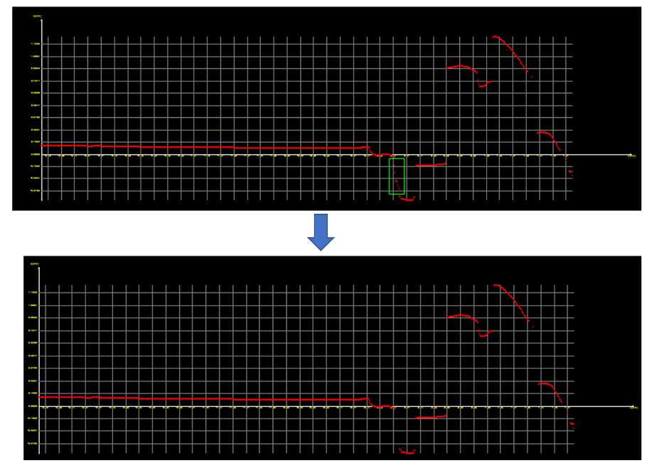
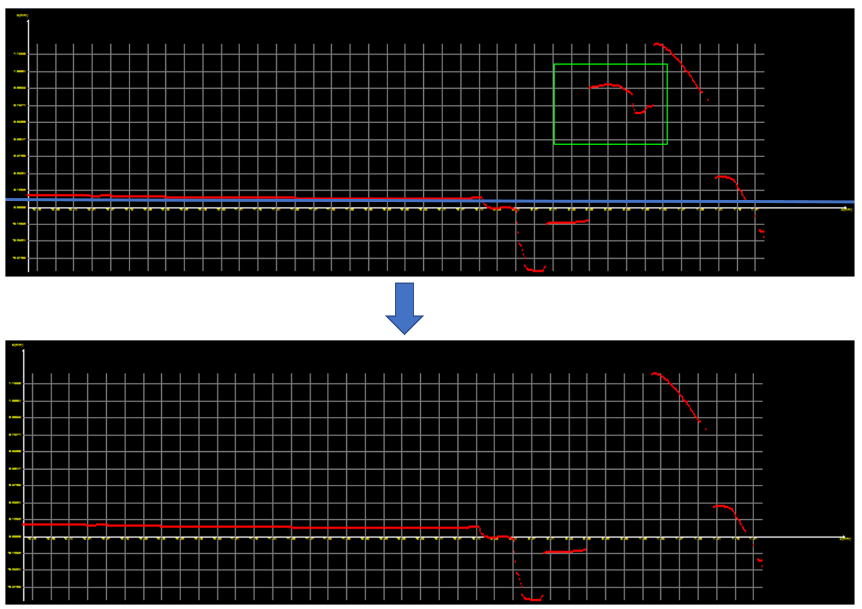
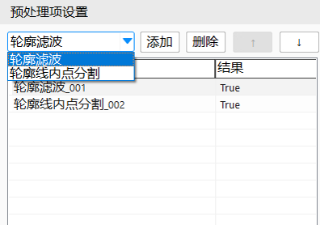
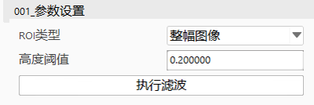
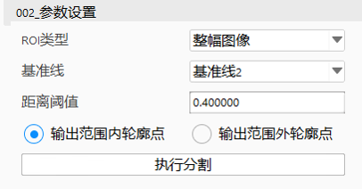
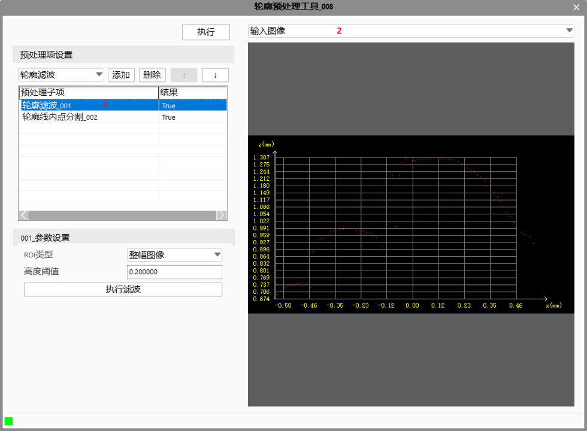
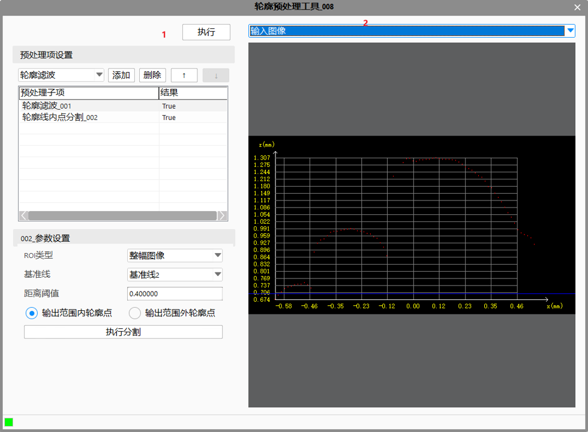

轮廓预处理工具的功能是：输入的原始轮廓（有噪点干扰），通过此工具的一系列预处理后，输出所需要的的轮廓（去除噪点等干扰）来进行后续的测量或检测。 工具包含两种子项：轮廓滤波、轮廓线内点分割。
轮廓滤波工具的主要功能是滤除轮廓中的陡峭点（ 轮廓在上升沿或下降沿出的干扰点） 。

轮廓滤波工具的主要功能是去除到基准线的距离大于距离阈值的轮廓点，保留在距离阈值范围之内的点。如下图，基准线为X轴，距离阈值0.05，结果如下图所示。


目前支持两种预处理项：轮廓滤波、轮廓线内点分割。
列表中子项遵循以下规则：
前一项的输出轮廓是后一项的输入轮廓。
若前一个工具若执行失败，则后面所有的预处理子项跳过执行，最终工具输出执行失败结果。
选中列表子项后，图像窗口显示该子项的输入、输出轮廓图像，方便用户一边观察结果一边调参。若要看工具最终执行结果，直接点击执行即可查看工具最后输出的轮廓图像。
| 参数名称 | 参数描述 |
|---|---|
| 输入轮廓数据 | 输入待处理的轮廓数据，该参数可来源于截面生成工具。 |
| 二维线性变换 | 目标相对于模板的平移、旋转、变换，该参数可来源于轮廓定位工具。 |
| 基准线1/2/3 | 轮廓线内点分割子项所需要的基准线候选项，轮廓线内点分割子项参数设置时可引用这三条候选的基准线。 |
轮廓滤波参数：

| 参数名称 | 参数描述 |
|---|---|
| ROI类型 | 支持4种ROI：整幅图像、矩形ROI、仿射矩形ROI和圆形 |
| 高度阈值 | 相邻两点Z方向差值绝对值 >（高度阈值*两点中间间隔的点数+1）的点将会被滤除。 |
轮廓线内点分割参数：

| 参数名称 | 参数描述 |
|---|---|
| 基准线 | 此处基准线引用轮廓预处理工具的数据链中的”基准线1/2/3“ |
| ROI类型 | 支持4种ROI：整幅图像、矩形ROI、仿射矩形ROI和多仿射矩形ROI |
| 距离阈值 | 轮廓点到基准线的最大距离，大于距离阈值的点将会被去除 |
| 输出范围内/外轮廓点 | 选择“范围内”，则去除到基准线的距离大于距离阈值的轮廓点，保留在距离阈值范围之内的点；选择“范围外”，则相反，保留到基准线的距离大于距离阈值的轮廓点，去除在距离阈值范围之内的点。 |
选中列表子项后，图像窗口显示该子项的输入、输出轮廓图像，方便用户一边观察结果一边调参:

若要看工具最终执行结果，直接点击执行即可查看工具最后输出的轮廓图像。

| 参数名称 | 参数描述 |
|---|---|
| 输出轮廓数据 | 输出的轮廓数据，包括轮廓点数，有效点数。 |
| 执行结果 | 工具执行结果。 |
| 执行时间 | 工具执行时间。 |
无
参见“\Samples\3D\深度图\轮廓预处理工具.gvp”